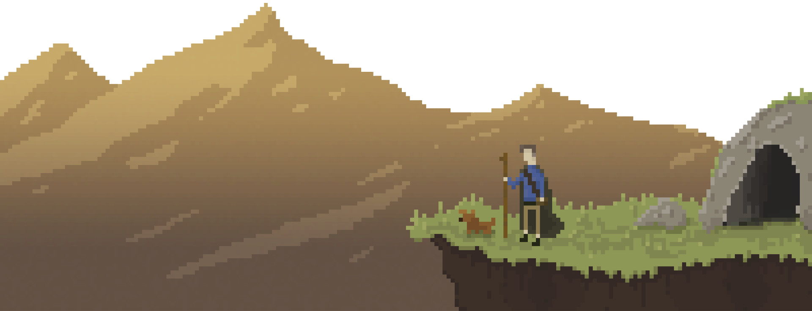

Один из моих любимейших пиксельных фонов в играх. Streets of Rage, 1991.
К жабкамПиксельарт или пиксельная графика (от англ. pixel — сокращение от pix element) — форма цифрового изображения, созданного на компьютере с помощью растрового графического редактора, где изображение редактируется на уровне пикселей (точек), а разрешение изображения настолько мало, что отдельные пиксели чётко видны. На старых (или на неполнофункциональных) компьютерах, в играх для Game Boy, играх для старых игровых приставок и многих играх для мобильных телефонов в основном используется пиксельная графика, так как это единственный способ сделать чётким небольшое изображение при малом разрешении экранов, характерном для этих устройств.
Распространено заблуждение, что любой рисунок или эскиз, сделанные с использованием растровых редакторов — пиксельная графика. Это неверно, "пиксельное" изображение отличается от "непиксельного" технологией — ручным редактированием рисунка пиксель за пикселем. Поэтому пиксельный рисунок отличается от других видов компьютерного искусства небольшими размерами, ограниченной цветовой палитрой и (как правило) отсутствием сглаживания. Пиксельная графика использует лишь простейшие инструменты растровых графических редакторов, такие как "карандаш", "прямая" или "заливка".
Поэтому встречаются шедевры пиксельной графики, сделанные в Microsoft Paint и других неполнофункциональных редакторах. В любом случае, использование инструментов, не работающих с отдельными пикселями (например, "Кисть") и автоматических фильтров (таких, как сглаживание) считается неприемлемым в "настоящем" искусстве пиксельной графики — такие инструменты добавляют новые пиксели автоматически, нарушая аккуратное ручное размещение. "Правилом хорошего тона" считается использовать минимальное число цветов; в идеале — стандартные 16 цветов, доступные на подавляющем большинстве видеоподсистем, даже самых ранних: в них три бита кодируют сигналы R,G,B и четвёртый бит кодирует яркость. Пиксельная графика напоминает некоторые классические виды изобразительных искусств, такие как вышивка крестиком, мозаика и вышивка бисером — так как рисунок складывается из небольших цветных элементов, аналогичных пикселям современных мониторов.
| Достоинства | Недостатки |
|---|---|
| Один из самых простых в изучении стилей компьютерного искусства (простую пиксельную картинку можно нарисовать, даже не имея особых художественных способностей). | В эпоху TrueColor-мониторов и видеосопроцессоров с аппаратным альфа-смешиванием выразительнее смотрятся другие стили (хоть на низких разрешениях всё равно приходится выравнивать линии по пикселям). |
| Естественный выбор на ограниченных палитрах и сверхнизких разрешениях, где важен каждый пиксель. | На некачественных мониторах может мерцать. |
| Требует мало памяти за счёт применения палитровых форматов с небольшим количеством цветов. | Плохо переносит автоматическое масштабирование (при изменении разрешения картинку требуется перерисовывать). |
Спасибо за прочтение!
